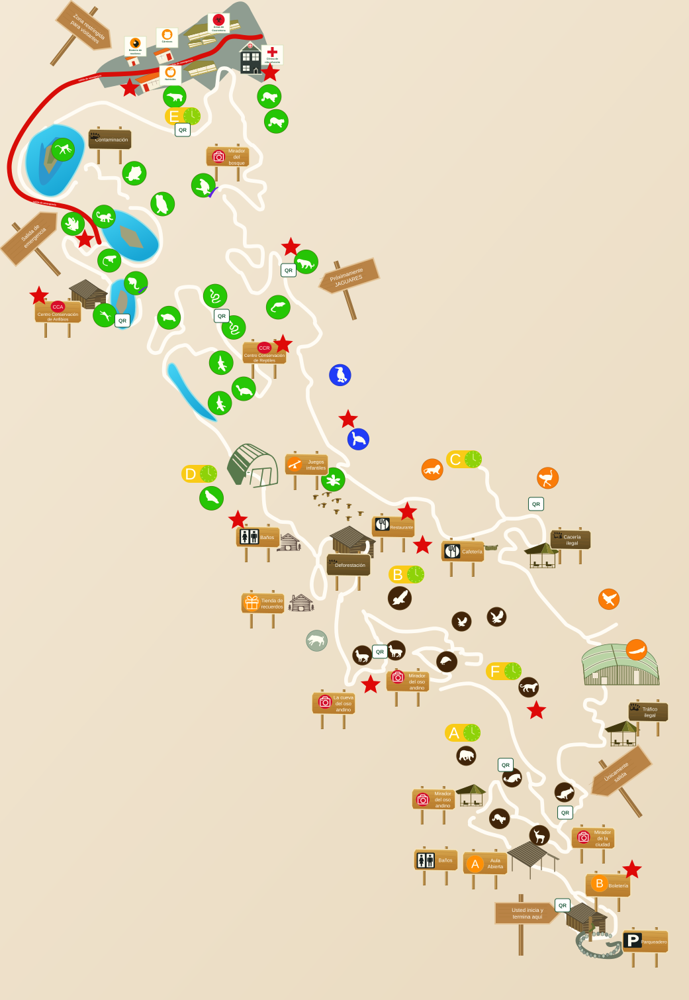

Mapa
Elige una acción para revisar el flujo. En el teléfono puedes tocar las paradas, arrastrar el mapa y ampliarlo con dos dedos o con los controles.
DESCUBRE EL BIOPARQUE
Explora Amaru
El avance se guarda para esta visita.
No necesitas GPS ni conexión a internet.

Leer un punto QR
Elige un punto para probar cómo se registra en el mapa.
Simulación de escaneo
Esta prueba no utiliza la cámara.
Listo para simular
Introducir un código manualmente
Animales del recorrido
Puntos del recorrido
Los puntos muestran referencias para orientar el recorrido.
Servicios del bioparque
Consulta el mapa para reconocer estos espacios. Los servicios no llevan QR.
La clínica de vida silvestre no equivale a primeros auxilios para visitantes. La ubicación de información y primeros auxilios para personas está pendiente de confirmación.
Visita registrada
Toca un animal del plano para abrir su ficha. El distintivo ▦ señala un punto QR propuesto del recorrido; su ubicación exacta debe confirmarse.
Biorregiones del bioparque
El parque presenta divisiones temáticas como Andes, Mágico Bosque Seco, Amazonía, Islas Encantadas y África Salvaje. Esta propuesta las menciona como contexto, sin asignar especies o paradas a cada una ni dibujar límites sobre el plano.